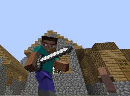
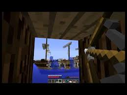
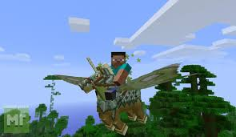

-------------------
ГОЛОВНА ІНФА
-------------------
|
-----------------------------------------------------------------------------------------------------------------------------------------------------------
Поради щодо ведення бою
-----------------------------------------------------------------------------------------------------------------------------------------------------------
Ця стаття - про деякі хитрості й трюки, які Ви можете застосовувати під час гри.
Термінологія

Бій - частина ігрового процесу , в якій гравець завдає шкоди мобам або іншим гравцям (у SMP ) з метою вбити їх.
Дуель - битва, в якому беруть участь 2 противника.
Битва - битва, в якому беруть участь більше 2 - ух супротивників.
Полювання - битва, в якому бере участь один або декілька гравців , які нападають на групи монстрів або гравця (ів) , з метою отримання їжі , досвіду і дропа
Нижче представлені правила та поради з виживання та мінімізації втрат в різних можливих ситуаціях .
Загальні поради
- Не носіть з собою багато цінностей - якщо Ви загинете , вони можуть пропасти .
- Якщо Ви все-таки загинули , не турбуйтеся : протягом 5 хвилин реального часу можна зібрати всі речі , що випали з Вашого інвентаря. Головне , щоб це не зробив хтось інший ! (Не варто забувати про режим хардкор !)
- Ходіть з друзями : вони і допоможуть , і речі збережуть у разі смерті.
- Можна вилити лаву під ноги ворога ( ворогам ) . Їм буде дуже складно вижити якщо поруч немає води. Мінуси: можна самому потрапити в лаву ; дроп згоряє.
- Стрибайте ! Так швидше за все ви викрутиться від атак супротивника і завдасте критичний удар ( крит наноситься тільки якщо удар (натискання ЛКМ ) був вироблений в момент падіння , тому ретельно розраховуйте час стрибка і удару) .
- Завжди носіть з собою меч. Бажано ставити його в перший осередок " пояса" , це дозволить вам , у разі раптового нападу , швидко взяти меч в руки , натиснувши на 1 .
- Якщо в мультіплеере вас оточують натовпи ворогів - спробуйте на час відключитися від сервера.
- Прибігайте до різних тактик ! Від скелета можна сховатися за стовпом , проти павука можна побудувати стовп під собою і бити його , поки він на нього забирається або ж вирити під собою яму шириною в 1 блок і атакувати павука знизу.
Дуель
Результат дуелі найчастіше залежить тільки від особливостей мобу - супротивника і підготовленості гравця. Також чималу роль відіграє місце , де відбувається бій .
Поради:
- Дуель найчастіше актуальна проти гравців в SMP - намагайтеся обдурити противника ! Це, мабуть , єдиний недолік гравця перед мобами .
- Намагайтеся не підпускати противника близько, щоб він не зміг завдати Вам шкоди .
- Обов'язково носіть з собою меч і (бажано ) лук зі стрілами . Без них Ви - мішень або видобуток .
- Пам'ятайте про особливості мобів . Приклад : павуки не можуть пролізти в прохід шириною в 1 блок ; мандрівник Краї отримує пошкодження від води та дощу ; фаерболи Гаст можна відбити , вдаривши по них.
- Використовуйте навколишній ландшафт. Приклад: якщо павук натрапить на дерево , він буде рухатися вгору -вниз по стовбуру , а листя не дасть йому підніматися вище і Ви зможете спокійно вбити павука , захиститися від інших ворогів або відновити здоров'я , поївши їжі (Не забувайте це робити , т.к . якщо Ви голодні , Ви не зможете відновлювати здоров'я і бігати )
- Броня захищає від пошкоджень , що допоможе зберегти вам життя.
Битва
У битві з кількома мобами вирішальну роль набувають їх кількість і різноманітність. Ну і, звичайно , майстерність гравця. Основний принцип тут - не стояти на місці , щоб ухилятися від атак численних суперників.
Поради:
- Беріть з собою кресало , якщо йдете на мобів , здатних горіти. Підпаліть місце , де вони будуть йти - так кілька мобів гарантовано отримають утрату.
- Зілля знадобляться теж, особливо вибухові . Приклади : якщо між Вами і скелетом або зомбі малу відстань , то киньте вибуховий зілля лікування між собою і противником - він отримає шкоди , а ви - відновите частину здоров'я . А отруйним зіллям можна отруїти цілу орду супротивників.
- Якщо Ви бачите , що Вам не впоратися з ворогами - біжіть , вміст Вашого інвентарю дорожче ( хоча і не завжди ) пороху , сліз Гаст і вогненних стрижнів - тобто дропа і досвіду з убитих мобів .
- Якщо серед мобів є кріпер , то першим ділом провокуйте його - він підірве інших.
- Ховайтеся за дерева , вони вам допоможуть. Наприклад , ви побачили скелета , а у вас мало здоров'я , то ховайтеся за дерево - наберете собі життів і підготуватися до бою !
Груповe полювання
Іноді полювання на мобів влаштовують групи гравців . У такому випадку при гарній екіпіровці і злагодженості дій усіх членів групи можна повалити зграї мобів , нездоланні одному . Краще , якщо в групі мисливців будуть як гравці з мечами , так і лучники , метальники зіль. В ідеалі у кожного мисливця має бути повний комплект різноманітного озброєння для підлаштовування до бойової обстановки . Тоді жоден моб (у будь-якій кількості ) не буде страшний Вам .
Поради:
- Зілля невидимості і нічного зору у кожного мисливця - щоб була можливість оточити і раптово атакувати ворогів.
- Один командир , якого всі слухаються.
- Їжа у кожного мисливця - щоб не відволікати інших проханнями.
- Добре , якщо в групі є чіткий поділ на воїнів зі зброєю ближнього і далекого бою - перше повинні прикривати другий .
- Взаємодопомога обов'язкове. Приклад: якщо у гравця є вибуховий зілля лікування , він може лікувати всю групу.
- Один гравець в бою брати участь не повинен , його мета - збивати агресію мобів на себе, якщо у одного з інших мисливців залишилося мало здоров'я .
Битви з гравцями ( PvP )
Якщо моб має постійні звички (особливості поведінки) , зброю, швидкість , то гравець - розумний противник , здатний на підступність , пастки , розуміння тактики , ухилення . Результат битви крім майстерності учасників тут зазвичай визначається їх спорядженням. У хід йде все - стріли , курячі яйця , вудки , зілля , їжа , завалявся ТНТ з кресалом , навколишні моби , ландшафт , гравці - очевидці битви. З зелий особливо цінними в PvP проти добре екіпірованого противника виявляться : " вибухати зілля утрати II , вибухають зілля слабкості (посилене ) , зілля прискорення (посилене ) , зілля регенерації (будь-яке ) і зілля лікування " . При битві з сильними гравцями в ближньому бою бажано бути одягненим мінімум в залізній броні , зачарованої на " Захист " вище 2 рівня. Також можна використовувати зілля вогнестійкості для відомості утрати від вогню і лави до нуля. Зауважте , чтоброня не поглинає утрати зіль.
Поради:
- Тут більше сенсу ризикувати , адже у противника в інвентарі може бути чимало добра.
- Остерігайтеся засідок .
- Запам'ятайте нік суперника , це може стати в нагоді при спілкуванні з адміністрацією сервера.
- Уважно дивіться по сторонам , особливо , якщо бій йде в приміщенні , яке вам незнайоме. Противник , відступаючи , цілком може забігти в зону , заставлену пастками , або заманити вас до краю обриву , а потім скинути вас вниз.
- Також , якщо на сервері PvP заборонений , можна зняти скріншот цього гравця (F2) і викласти його адміністраторам на сайт / сторінку в соц.сетях . Якщо таких скріншотів з цим гравцем буде багато ,
його забанити .
- Використовуйте зілля невидимості , воно допоможе втекти від ворога ( не забудьте зняти броню ) . Може не допомогти якщо у противника клієнт з чітамі , що дозволяють бачити лінії, що йдуть до гравців .
- Намагайтеся добиратися до свого помешкання , коли поруч немає гравців , так як вони можуть знати , де воно знаходиться і наносити шкоду ( гріферство , крадіжка і т. д.). Також загроза є і для вас , поки ви дивитеся в скриню або щось переплавляли , переслідувач зможе атакувати , і навіть вбити , якщо вчасно не відреагувати.
На Вас напали
Ви з друзями йдете додому з шахти зі свежедобитимі алмазами і раптом зграя гравців налітає на вас. Такий сценарій знайомий багатьом . Швидше за все це гріфери - вони добре підготовлені.
Поради:
- Те ж що і в пункті Групова полювання.
- Ризик бути вбитим і втратити всі речі великий - якщо не впевнені у своїх силах , можете переміщуватися до Спауну (якщо на сервері є така команда) або просто відключитися на годинку . Але є невеликий шанс того , що гріфер заллє місце , де ви були , виходячи з сервера , лавою , або ж заповнить твердим блоком або гравієм / піском.
- Якщо ви все ж втратили свої речі , постарайтеся домогтися їх повернення ( скарга адміністрації , але небажано ) або , в крайньому випадку , постарайтеся атакувати вашого кривдника , з метою повернути свої речі
Напад
На просторах інтернету існує багато серверів з включеним PvP і призначені спеціально для гріферства , тут найважливішим буде елемент раптовості і хороша екіпіровка.
Поради:
- Краще піти подалі від точки Спаунa , так як більшість PvP'ешніков шукають слабких суперників саме близько Спаун , щоб не шукати гравців у далеких куточках сервера.
- Роздобудьте собі залізну броню і зброю.
- Якщо у вас є сусіди , постарайтеся з ними подружитися , знизивши ймовірність " удару в спину".
- Ретельно маскуйте свій будинок .
Полювання
Після того як всі вище ви зробили рекомендується почати полювання на інших гравців.
Поради:
- Hе нападайте на слабких суперників (гравці без броні , зброї) зазвичай вони новачки , і у них нічого немає (крім землі і кругляка )
- Атакуйте суперників приблизно вашого рівня (щоб примножити свої багатства ) , пам'ятайте головне - елемент раптовості.
- Перед прямою атакою нанесіть збиток суперникові ( вилити під нього лаву , підпалити землю) , це збільшить ваші шанси на успішний результат.
- Під час бою тримайте дистанцію. Якщо їсти цибулю , активно його використовуйте , перебуваючи при цьому вище суперника ( на стовпі , дереві)
- Використовуйте різні особливості ландшафту , наприклад каньйони . Можна скинути туди противника , а потім зібрати його Лут .
- Озирайтеся по сторонам . Противник міг бути не один.
Якщо хочете швидко роздобути алмазну броню та й самі алмази , то наступна група рад вам допоможе.
- Підберіть суперника в алмазної броні , який веде себе мирно ( ловить рибу , пише повідомлення)
- Спершу краще вилити під нього лаву (якщо підпалити , то буде малоефективно ), потім почекати приблизно п'ять- шість секунд і зібрати її . Потім потрібно дістати меч і добити противника.
- Якщо у противника є зілля вогнестійкості або у вас немає лави , то постарайтеся знайти поблизу глибоку яму. Зіштовхніть туди противника , а потім засипте його піском або гравієм.
Кілька корисних порад
Поради:
- Використовуйте перли Краю. Правильно кинута перлина може вас врятувати із, здавалося б , безвихідного становища.
- Комплект алмазної броні , зачарований на Захист IV + Міцність III , дозволяє витримувати на собі удари навіть декількох супротивників протягом довгого часу.
- Якщо ви збираєтеся влаштовувати серйозне PvP - бій з досвідченими супротивниками , запасіться посиленими золотими яблуками. Яблуко дозволить вам вижити в критичній ситуації.
- Якщо ви граєте на сервері без будь-яких правил (дозволено будь PvP і гріфінг ) , йдучи із бою , ніколи не повертайтеся в ваше поселення звичайним шляхом. Для заплутування переслідувачів , що використовують зілля невидимості , можна пройти через найближчий відомий вам портал Нижнього світу .
- Також для посилення ефекту раптовості можна скористатися снайперської тактикою. Постарайтеся злитися з ландшафтом , для цього можна використовувати зілля невидимості , фарбовану броню зі шкіри або скін з схожою з навколишнім ландшафтом текстурою. Не рекомендується використовувати цибулю з чарами « Займання » , оскільки це може демаскувати вашу позицію.
|
---------------------
ЗМІСТ
---------------------
- Термінологія
- Загальні поради
- Дуель
- Битва
- Групове полювання
- Битви з гравцями ( PvP )
- На Вас напали
- Напад
- Полювання
- Кілька корисних порад
|